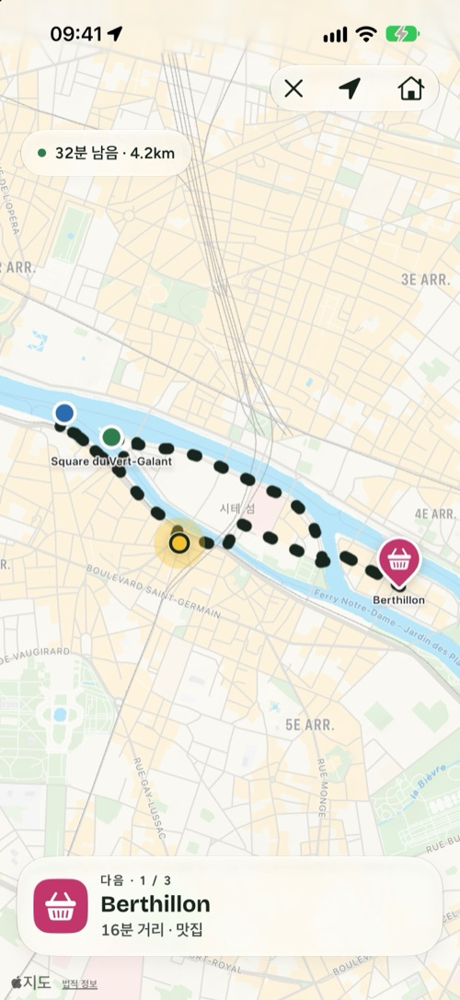
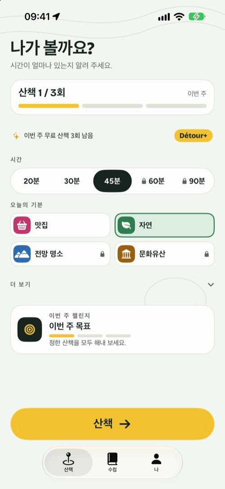
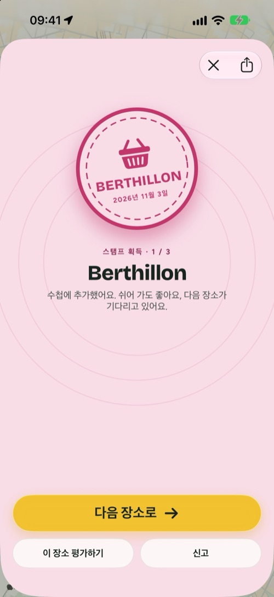
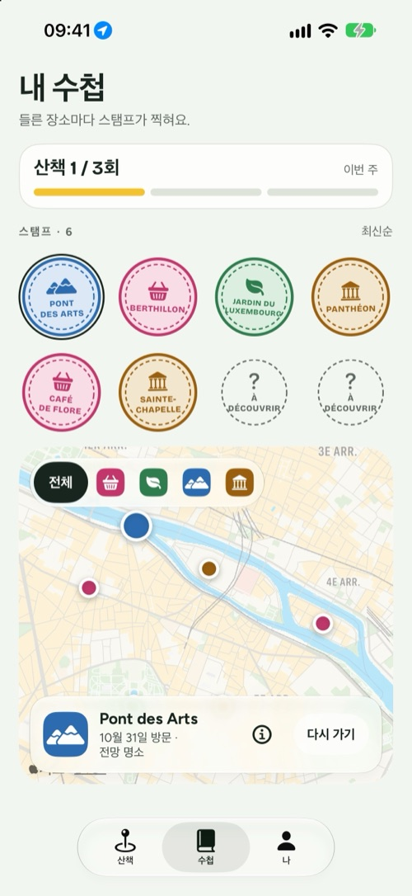

Détour
시간이 얼마나 있는지 알려 주세요. 걸으러 나갈 좋은 이유를 드릴게요.
iPhone, iPad, iPhone Duo용 · 무료, 선택형 Détour+

이용 방법
세 가지만 고르면 바로 출발.
Détour는 A에서 B로 가는 길을 알려 주는 앱이 아니에요. 나갈 이유를 만들어 주고, 다시 집으로 데려다줘요.
1
시간
20분, 30분, 45분 또는 그 이상. 코스는 지금 있는 곳에서 시작해 다시 돌아와요.
2
기분
맛집, 자연, 전망, 문화유산 중에서 골라요. 가는 길에 들를 진짜 장소가 2~4곳 나와요.
3
출발
경로를 따라 걸어요. 도착한 장소는 자동으로 확인되고, 수첩에 스탬프가 찍혀요.
4가지 기분
관광이 아니라, 걸을 이유.
맛집빵집, 카페, 아이스크림.
자연공원, 강가, 정원.
전망전망대, 다리, 파노라마.
문화유산교회, 박물관, 기념물.
화면으로 보기
네 장면으로 보는 산책.



iPhone Duo
접으면 손안에, 펼치면 지도 위에.
- 접으면 바깥 화면에 꼭 필요한 것만 담아요. 시간, 기분, 그리고 ‘출발’.
- 펼치면 한쪽에는 설정, 다른 쪽에는 그려지는 코스가 나타나요.
- 서프라이즈 모드: 다음 장소는 걷는 동안 하나씩 공개돼요.
- 산책하는 동안 다음 장소와 남은 거리가 잠금 화면과 Dynamic Island에 표시돼요.
- 주간 목표, 배지, 매주 새로운 챌린지, 그리고 원하면 산책 기록을 Apple 건강에 저장할 수 있어요.

Détour+
습관은 무료로, 더 멀리는 Détour+로.
무제한 산책, 4가지 기분 모두, 길 종류를 고르는 최대 90분 코스, 그리고 서프라이즈 모드.
7일 무료
연간
연7일 무료 체험으로 시작
월간
월언제든 해지 가능
평생
1회한 번 구매로 평생
무료: 주 3회 산책, ‘자연’과 ‘맛집’ 기분, 최대 45분, 수첩과 배지. 가격은 국가에 따라 달라요. 구독은 Apple 계정 설정에서 관리하고 해지할 수 있어요.
개인정보
내 산책은 내 것.
계정 없음
만들 것도, 기억할 것도 없어요. 수첩은 내 iPhone에 있어요.
산책 중에만 위치 사용
코스를 그리고 장소를 확인하는 데만, 산책하는 동안에만 쓰여요.
광고 없음
광고 추적기가 없어요. 자세한 내용은 개인정보 처리방침에서 확인하세요.